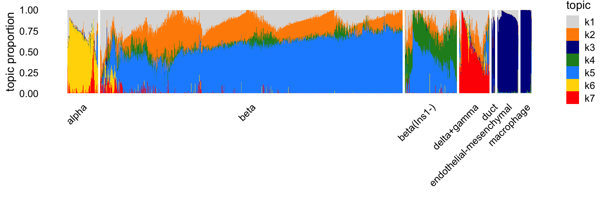
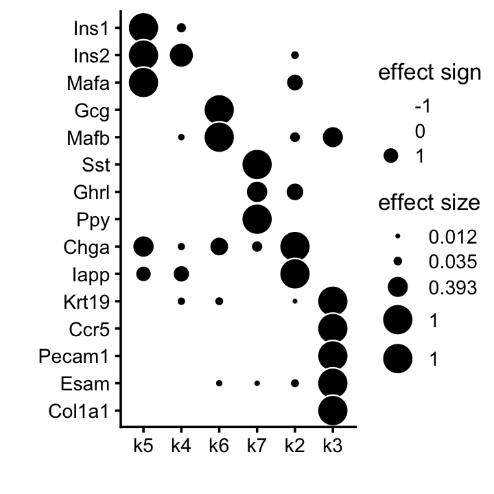
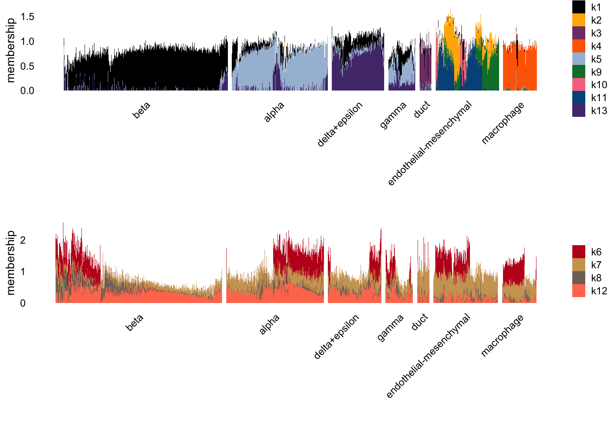
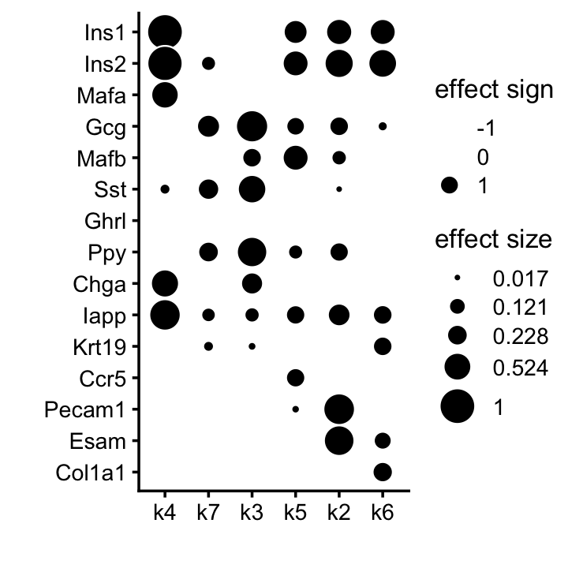

Last updated: 2025-06-11
Checks: 6 1
Knit directory:
single-cell-jamboree/analysis/
This reproducible R Markdown analysis was created with workflowr (version 1.7.1). The Checks tab describes the reproducibility checks that were applied when the results were created. The Past versions tab lists the development history.
Great! Since the R Markdown file has been committed to the Git repository, you know the exact version of the code that produced these results.
Great job! The global environment was empty. Objects defined in the global environment can affect the analysis in your R Markdown file in unknown ways. For reproduciblity it’s best to always run the code in an empty environment.
The command set.seed(1) was run prior to running the
code in the R Markdown file. Setting a seed ensures that any results
that rely on randomness, e.g. subsampling or permutations, are
reproducible.
Great job! Recording the operating system, R version, and package versions is critical for reproducibility.
To ensure reproducibility of the results, delete the cache directory
pancreas_cytokine_S1_factors_cache and re-run the analysis.
To have workflowr automatically delete the cache directory prior to
building the file, set delete_cache = TRUE when running
wflow_build() or wflow_publish().
Great job! Using relative paths to the files within your workflowr project makes it easier to run your code on other machines.
Great! You are using Git for version control. Tracking code development and connecting the code version to the results is critical for reproducibility.
The results in this page were generated with repository version 2153b30. See the Past versions tab to see a history of the changes made to the R Markdown and HTML files.
Note that you need to be careful to ensure that all relevant files for
the analysis have been committed to Git prior to generating the results
(you can use wflow_publish or
wflow_git_commit). workflowr only checks the R Markdown
file, but you know if there are other scripts or data files that it
depends on. Below is the status of the Git repository when the results
were generated:
Untracked files:
Untracked: analysis/lps_cache/
Untracked: analysis/mcf7_cache/
Untracked: analysis/pancreas_cytokine_S1_factors_cache/
Untracked: analysis/temp2.R
Untracked: data/GSE132188_adata.h5ad.h5
Untracked: data/GSE183010/
Untracked: data/Immune_ALL_human.h5ad
Untracked: data/pancreas_cytokine.RData
Untracked: data/pancreas_endocrine.RData
Untracked: data/pancreas_endocrine_alldays.h5ad
Note that any generated files, e.g. HTML, png, CSS, etc., are not included in this status report because it is ok for generated content to have uncommitted changes.
These are the previous versions of the repository in which changes were
made to the R Markdown
(analysis/pancreas_cytokine_S1_factors.Rmd) and HTML
(docs/pancreas_cytokine_S1_factors.html) files. If you’ve
configured a remote Git repository (see ?wflow_git_remote),
click on the hyperlinks in the table below to view the files as they
were in that past version.
| File | Version | Author | Date | Message |
|---|---|---|---|---|
| Rmd | 2153b30 | Peter Carbonetto | 2025-06-11 | wflow_publish("pancreas_cytokine_S1_factors.Rmd", verbose = TRUE) |
| Rmd | 980e670 | Peter Carbonetto | 2025-06-11 | Fixed the clustering for the pancreas_cytokine data slightly. |
| Rmd | d1fdbe9 | Peter Carbonetto | 2025-06-11 | Made a few improvements to the pancreas_cytokine_S1_factors analysis. |
| Rmd | ce314bb | Peter Carbonetto | 2025-06-09 | First try at running fastTopics and flashier on the pancreas_cytokine data, for mouse = S1 only; from this analysis I learned that I need to remove the mt and rp genes. |
| Rmd | 422c8ed | Peter Carbonetto | 2025-06-09 | Added steps to the pancreas_cytokine_S1_factors analysis to prepare the data for fastTopics and flashier. |
| Rmd | 46ba21a | Peter Carbonetto | 2025-06-06 | Started new analysis in pancreas_cytokine_S1_factors.Rmd. |
Here we perform a NMF analyses of the “pancreas cytokine” data set, focussing on the scRNA-seq data from untreated mouse only.
Load packages used to process the data, perform the analyses, and create the plots.
library(Matrix)
library(fastTopics)
library(flashier)
library(singlecelljamboreeR)
library(ggplot2)
library(cowplot)Set the seed for reproducibility:
set.seed(1)Load the prepared data set:
load("../data/pancreas_cytokine.RData")Here we will analyze the cells from the untreated mouse only:
i <- which(samples$mouse == "S1")
samples <- samples[i,]
counts <- counts[i,]Remove two cells that appear to be outliers:
outliers <- c("TTTGTTGTCGTTAGTG-1","TTTGTTGGTAGAGCTG-1")
i <- which(!is.element(samples$barcode,outliers))
samples <- samples[i,]
counts <- counts[i,]Remove genes that are expressed in fewer than 5 cells:
j <- which(colSums(counts > 0) > 4)
genes <- genes[j,]
counts <- counts[,j]This is the dimension of the data set we will analyze:
dim(counts)
# [1] 3137 16366For the Gaussian-based analyses, we will need the shifted log counts:
a <- 1
s <- rowSums(counts)
s <- s/mean(s)
shifted_log_counts <- log1p(counts/(a*s))
rownames(shifted_log_counts) <- NULLFit a topic model with \(K = 7\) topics to the counts:
tm <- fit_poisson_nmf(counts,k = 7,init.method = "random",method = "em",
numiter = 40,verbose = "none",
control = list(numiter = 4,nc = 8,extrapolate = FALSE))
tm <- fit_poisson_nmf(counts,fit0 = tm,method = "scd",numiter = 40,
control = list(numiter = 4,nc = 8,extrapolate = TRUE),
verbose = "none")
Warning: The above code chunk cached its results, but
it won’t be re-run if previous chunks it depends on are updated. If you
need to use caching, it is highly recommended to also set
knitr::opts_chunk$set(autodep = TRUE) at the top of the
file (in a chunk that is not cached). Alternatively, you can customize
the option dependson for each individual chunk that is
cached. Using either autodep or dependson will
remove this warning. See the
knitr cache options for more details.
Structure plot comparing the topics to the clusters:
topic_colors <- c("gainsboro","darkorange","darkblue","forestgreen",
"dodgerblue","gold","red")
L <- poisson2multinom(tm)$L
clusters <- as.character(samples$cluster)
clusters[clusters == "islet"] <- "beta"
clusters[clusters == "beta" & L[,"k6"] > 0.3] <- "alpha"
clusters[clusters == "beta" & L[,"k7"] > 0.2] <- "delta+gamma"
clusters[clusters == "beta" & L[,"k4"] > 0.2] <- "beta(Ins1-)"
clusters <- factor(clusters)
structure_plot(L,grouping = clusters,gap = 10,colors = topic_colors,
topics = 1:7)
Based on the estimated \(\mathbf{F}\), we have the following potential interpretation of the topics:
scale_rows <- function (A)
A / apply(A,1,max)
marker_genes <- c("Ins1","Ins2","Mafa","Gcg","Mafb","Sst","Ghrl",
"Ppy","Chga","Iapp","Krt19","Ccr5","Pecam1","Esam",
"Col1a1","Ghrl")
j <- match(marker_genes,genes$symbol)
F <- poisson2multinom(tm)$F
F <- F[j,]
F <- scale_rows(F)
rownames(F) <- marker_genes
topics <- paste0("k",c(5,4,6,7,2,3))
p <- annotation_heatmap(F[,topics],select_features = "all",verbose = FALSE)
print(p)
Next fit an NMF to the shifted log counts using flashier, also with \(K = 7\):
n <- nrow(samples)
x <- rpois(1e7,1/n)
s1 <- sd(log(x + 1))
fl_nmf <- flash(shifted_log_counts,S = s1,ebnm_fn = ebnm_point_exponential,
var_type = 2,greedy_Kmax = 7,backfit = FALSE,
nullcheck = FALSE,verbose = 0)
fl_nmf <- flash_backfit(fl_nmf,extrapolate = FALSE,maxiter = 40,verbose = 0)
fl_nmf <- flash_backfit(fl_nmf,extrapolate = TRUE,maxiter = 80,verbose = 0)
Warning: The above code chunk cached its results, but
it won’t be re-run if previous chunks it depends on are updated. If you
need to use caching, it is highly recommended to also set
knitr::opts_chunk$set(autodep = TRUE) at the top of the
file (in a chunk that is not cached). Alternatively, you can customize
the option dependson for each individual chunk that is
cached. Using either autodep or dependson will
remove this warning. See the
knitr cache options for more details.
Structure plot comparing the factors to the clusters:
L <- ldf(fl_nmf,type = "i")$L
colnames(L) <- paste0("k",1:7)
clusters <- as.character(samples$cluster)
clusters[clusters == "endothelial-mesenchymal"] <- "mesen.+endothelial"
clusters[clusters == "mesen.+endothelial" & L[,"k6"] > 0.5] <- "mesenchymal"
clusters[clusters == "islet"] <- "beta"
clusters[clusters == "beta" & L[,"k3"] > 0.5] <- "alpha+delta+gamma"
clusters[clusters == "beta" & L[,"k7"] > 0.25] <- "beta(Ins1-)"
clusters <- factor(clusters)
structure_plot(L[,-1],grouping = clusters,gap = 10,colors = topic_colors[-1]) +
labs(y = "membership")
Possible interpretation of the factors:
scale_cols <- function (A) {
b <- apply(A,2,max)
return(t(t(A) * b))
}
marker_genes <- c("Ins1","Ins2","Mafa","Gcg","Mafb","Sst","Ghrl",
"Ppy","Chga","Iapp","Krt19",
"Ccr5","Pecam1","Esam","Col1a1","Ghrl")
j <- match(marker_genes,genes$symbol)
F <- ldf(fl_nmf,type = "i")$F
F <- scale_cols(F)
F <- F[j,]
rownames(F) <- marker_genes
colnames(F) <- paste0("k",1:7)
factors <- paste0("k",c(4,7,3,5,2,6))
p <- annotation_heatmap(F[,factors],select_features = "all",verbose = FALSE)
print(p)
sessionInfo()
# R version 4.3.3 (2024-02-29)
# Platform: aarch64-apple-darwin20 (64-bit)
# Running under: macOS 15.4.1
#
# Matrix products: default
# BLAS: /Library/Frameworks/R.framework/Versions/4.3-arm64/Resources/lib/libRblas.0.dylib
# LAPACK: /Library/Frameworks/R.framework/Versions/4.3-arm64/Resources/lib/libRlapack.dylib; LAPACK version 3.11.0
#
# locale:
# [1] en_US.UTF-8/en_US.UTF-8/en_US.UTF-8/C/en_US.UTF-8/en_US.UTF-8
#
# time zone: America/Chicago
# tzcode source: internal
#
# attached base packages:
# [1] stats graphics grDevices utils datasets methods base
#
# other attached packages:
# [1] cowplot_1.1.3 ggplot2_3.5.0
# [3] singlecelljamboreeR_0.1-3 flashier_1.0.55
# [5] ebnm_1.1-34 fastTopics_0.7-25
# [7] Matrix_1.6-5
#
# loaded via a namespace (and not attached):
# [1] tidyselect_1.2.1 viridisLite_0.4.2 farver_2.1.1
# [4] dplyr_1.1.4 fastmap_1.1.1 lazyeval_0.2.2
# [7] promises_1.2.1 digest_0.6.34 lifecycle_1.0.4
# [10] invgamma_1.1 magrittr_2.0.3 compiler_4.3.3
# [13] rlang_1.1.5 sass_0.4.9 progress_1.2.3
# [16] tools_4.3.3 utf8_1.2.4 yaml_2.3.8
# [19] data.table_1.17.4 knitr_1.45 labeling_0.4.3
# [22] prettyunits_1.2.0 htmlwidgets_1.6.4 scatterplot3d_0.3-44
# [25] plyr_1.8.9 RColorBrewer_1.1-3 Rtsne_0.17
# [28] workflowr_1.7.1 withr_3.0.2 purrr_1.0.2
# [31] grid_4.3.3 fansi_1.0.6 git2r_0.33.0
# [34] colorspace_2.1-0 scales_1.3.0 gtools_3.9.5
# [37] cli_3.6.4 rmarkdown_2.26 crayon_1.5.2
# [40] generics_0.1.3 RcppParallel_5.1.10 httr_1.4.7
# [43] reshape2_1.4.4 pbapply_1.7-2 cachem_1.0.8
# [46] stringr_1.5.1 splines_4.3.3 parallel_4.3.3
# [49] softImpute_1.4-1 vctrs_0.6.5 jsonlite_1.8.8
# [52] hms_1.1.3 mixsqp_0.3-54 ggrepel_0.9.5
# [55] irlba_2.3.5.1 horseshoe_0.2.0 trust_0.1-8
# [58] plotly_4.10.4 tidyr_1.3.1 jquerylib_0.1.4
# [61] glue_1.8.0 uwot_0.2.3 stringi_1.8.3
# [64] Polychrome_1.5.1 gtable_0.3.4 later_1.3.2
# [67] quadprog_1.5-8 munsell_0.5.0 tibble_3.2.1
# [70] pillar_1.9.0 htmltools_0.5.8.1 truncnorm_1.0-9
# [73] R6_2.5.1 rprojroot_2.0.4 evaluate_1.0.3
# [76] lattice_0.22-5 highr_0.10 RhpcBLASctl_0.23-42
# [79] SQUAREM_2021.1 ashr_2.2-66 httpuv_1.6.14
# [82] bslib_0.6.1 Rcpp_1.0.12 deconvolveR_1.2-1
# [85] whisker_0.4.1 xfun_0.42 fs_1.6.5
# [88] pkgconfig_2.0.3